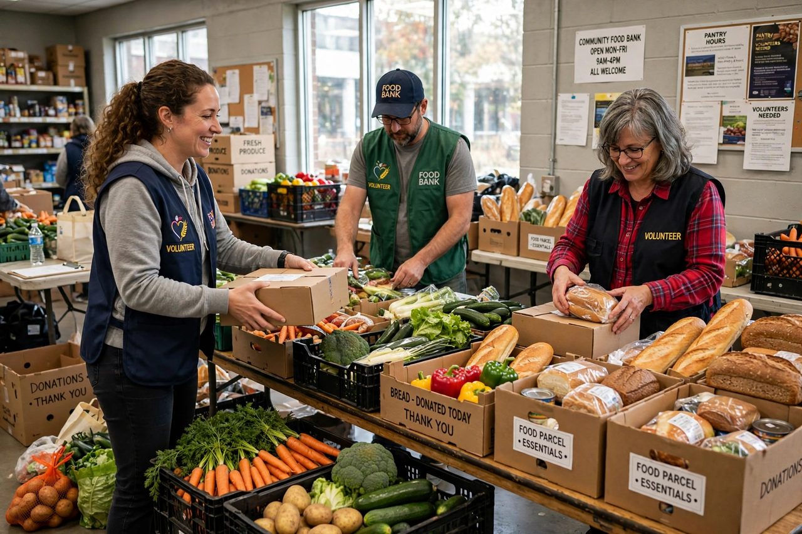

Food security
From Wikipedia, the free encyclopedia

Food security is the state of having reliable access to a sufficient quantity of affordable, nutritious food. The concept originated in international development policy in the 1970s and was refined at the 1996 World Food Summit in Rome, which defined food security as existing "when all people, at all times, have physical and economic access to sufficient, safe and nutritious food that meets their dietary needs and food preferences for an active and healthy life". The opposite condition, food insecurity, ranges from anxiety about obtaining food to severe hunger and malnutrition.
Analysts usually describe food security as resting on four pillars: availability (enough food is produced or imported), access (households can obtain it), utilisation (food is nutritious and safely prepared, with clean water and sanitation), and stability (the first three hold over time, through shocks such as drought, conflict or price spikes). The Food and Agriculture Organization (FAO) of the United Nations coordinates much of the global monitoring of food security, including the annual State of Food Security and Nutrition in the World report.
History of the concept
The term gained prominence after the world food crisis of 1972–1975, when attention centred on national and global food supplies. In the 1980s the economist Amartya Sen shifted the debate with his "entitlement" analysis of famines, showing that people can starve amid available food when they lose the means to obtain it. Policy broadened in the 1990s from supply alone to household access, nutrition and livelihoods, and the 1996 summit definition is still the most widely used.
Causes of food insecurity
Food insecurity is driven by poverty, armed conflict, climate extremes and variability, economic shocks, and weak infrastructure for storage and transport. Conflict is a leading cause of acute crises: war destroys crops and markets and displaces farming populations. At household level, insecurity is often chronic rather than famine-like — families may eat enough calories but lack dietary diversity, leading to micronutrient deficiency ("hidden hunger") alongside, paradoxically, rising obesity in many countries. Post-harvest losses and food waste further reduce effective supply.
Measurement
Global monitoring uses indicators such as the prevalence of undernourishment and the Food Insecurity Experience Scale (FIES), based on surveys asking whether people ran out of food or skipped meals for lack of money. For acute crises, the Integrated Food Security Phase Classification (IPC) grades areas from Phase 1 (none/minimal) to Phase 5 (catastrophe/famine). Recent SOFI reports estimate that roughly 2.3–2.4 billion people are moderately or severely food insecure, and around 700–800 million face hunger.
Responses
Responses range from emergency food aid and cash transfers to long-term investment in agriculture, resilient seed varieties, irrigation, social protection "safety nets" such as school meals, and strategic grain reserves. Sustainable Development Goal 2 ("Zero Hunger") commits UN member states to ending hunger and achieving food security by 2030, a target widely considered off track. Related concepts include food sovereignty, which emphasises communities' control over their own food systems.